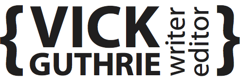

Victoria is a pleasure to work with, she has the ability to interpret a brief accurately, research excellent source material and supplies a complete package on time and to budget. Her interests and ability in writing cover a wide range of subjects from cupcakes to serious in-depth topics and she is more than able to take on any brief that you ask her to. Charlotte Brett, Editor, Handmade Living.
Who is she and what does she do? Victoria is an ambitious individual who has five years experience editing, writing and drinking too much tea. She produces fresh and engaging copy for magazines, websites, blogs, print and just about anything else you can think of. She is a published author with a degree in Publishing, Media and Creative Writing. She has worked as editor of a magazine and has written for large, national magazines, smaller trade titles and has produced snappy promotional copy for local companies. Everything she writes is thoroughly researched and targeted to specific audiences.
Editing
Victoria loves what she does... and it shows. She’s led the development of a national consumer craft magazine, from developing branding and commissioning, through to signing off pages for print. She is confident in heading up writing projects, has strong organisational skills and plenty of creative ideas.
Feature Writing
Skilled at researching and writing, Victoria develops interesting, focussed and on-trend features and interviews for a wide variety of different topics and audiences. She is able to work to a brief and also offer her own ideas. Some of her more recent work has included features for Handmade Living, Vanilla and Chat! It’s Fate. Her main areas of interest here are lifestyle, beauty and crafts.
Copywriting
Victoria generates chiseled audience specific copy for print and dynamic content for print and the web. She has experience in copywriting for optometrists through to boat chartering companies.
Copyediting
Skilled at copyediting, Victoria transforms dull, lifeless copy into informative and absorbing features, news pieces and blog posts for ongoing and one-off projects. Over the years she has copyedited for a variety of different magazines including Inside Crochet, Modern Quilting and Sew Hip.
Proofreading
With a wealth of proofreading experience, Victoria is interested in all copy, whether it’s a 400 word blog post, a 1,000 word feature or your latest novel. She’s got an eye for detail and a passion for making sure everything that passes her desk leaves of the highest quality.